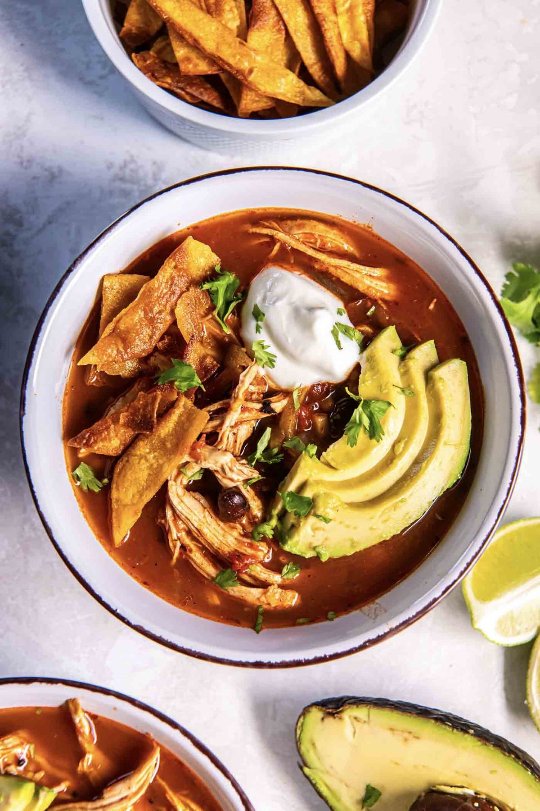

Chicken Tortilla Soup

- Meal
- Dinner
- Serves
- 6
- Protein
- chicken
- Cook
- stovetop · 20 min active / 45 min total · easy
- Make-ahead / leftovers
- yes / yes
- Mediterranean
- yes
- WW tier
- light
- Status
- Trying out (probation)
Kristine's brothy chicken tortilla soup with black beans, corn, fire-roasted tomatoes, and mild green chiles — chicken breasts poach right in the pot and get shredded back in. Crispy tortilla strips and a topping bar make it kid-buildable. Not chili: thin broth, no ground meat.
Ingredients
- 1 Tbsp olive oil
- 1 cup chopped yellow onion
- 4 cloves garlic, minced
- 1 Tbsp tomato paste
- 2 tsp chili powder
- 1 tsp ground cumin
- 1 tsp dried oregano
- 1/2 tsp garlic powder
- 1/2 tsp salt
- 1/4 tsp black pepper
- 4 cups low-sodium chicken broth
- 1 can (14.5 oz) fire-roasted crushed or diced tomatoes
- 1 can (4 oz) mild diced green chiles
- 1 can (15 oz) black beans, rinsed and drained
- 1 cup frozen or canned corn
- 1.5 lb boneless skinless chicken breast
- Tortilla strips: 6 corn tortillas + 1/4 cup olive oil (or crushed tortilla chips)
- Toppings: lime wedges, sour cream or Greek yogurt, shredded cheese, avocado, cilantro
Method
- Heat the olive oil in a Dutch oven over medium. Cook the onion 3 minutes. Add garlic, tomato paste, chili powder, cumin, oregano, garlic powder, salt, and pepper; stir 30 seconds.
- Add broth, tomatoes, green chiles, black beans, and corn. Nestle in the chicken.
- Bring slowly to a boil, then cover and simmer on low 15–25 minutes until the chicken reaches 165°F.
- Pull out the chicken, rest a few minutes, shred, and return it to the pot. Taste for salt.
- Tortilla strips: slice tortillas thin, pan-fry in the olive oil in a single layer ~2 minutes per side until crisp, drain on paper towels. (Or crumble chips.)
- Serve with the strips and toppings.
Notes
- Kristine's recipe is written for 6; we bumped chicken from 1.25 to 1.5 lb and tortillas from 4 to 6 so it's a real dinner for this family.
- Mild green chiles + chili powder only — kid-safe. Hot sauce at the table.
- Make-ahead: the soup (without strips) holds 4 days and freezes well.
- Mediterranean ✓: olive oil, poultry + black beans, plenty of vegetables. light if you go easy on the cheese/sour cream.